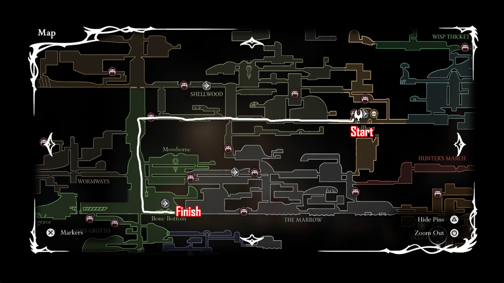
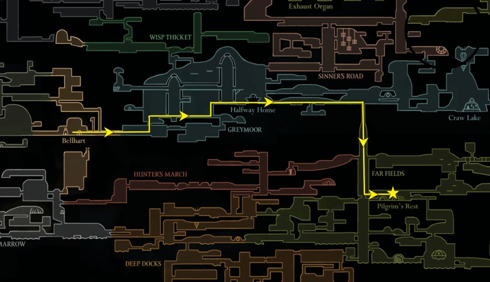
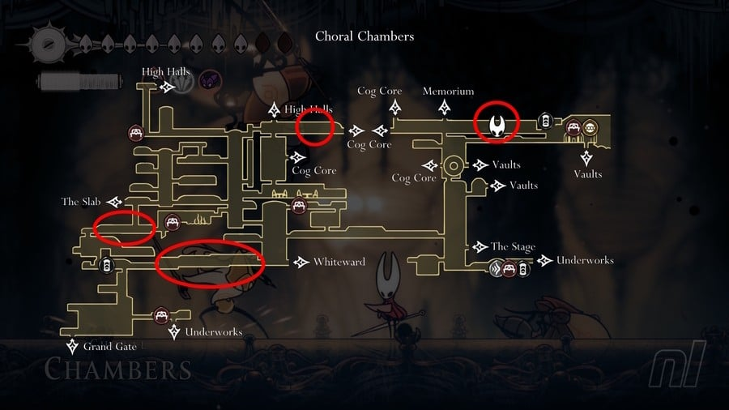

Maps, sources and credits
Courier maps
Open the publisher’s walkthrough alongside the image. Route markings show traversal, not immunity from parcel damage. Avoid fast travel while carrying supplies.

Bone Bottom Supplies walkthrough — Neoseeker. Map and annotations credited to the linked publisher; game imagery © Team Cherry.
Pilgrim’s Rest Supplies walkthrough — Gamerpillar. Map and annotations credited to Gamerpillar; game imagery © Team Cherry.Second Sentinel meeting locations

Final Audience and Cogwork Heart guide — Nintendo Life. These are encounter locations, not a single marker for every Cogheart fragment. Map and annotations credited to Nintendo Life; game imagery © Team Cherry.Interactive locations
Every catalogue entry with a map link opens its location on MapGenie’s Pharloom map. External maps may have their own account or access requirements. Locations supplement, rather than replace, quest prerequisites.
Data provenance
Names, collection descriptions and map links derive from Silksong Completionist, commit 7f85ff6146516f913065143c67e3402247557e8c. The upstream MIT notice is preserved in licenses/silksong-completionist.txt. Catalogue generation is repeatable with scripts/import-catalog.mjs and an upstream checkout.
The route’s timing and branch advice uses the Hollow Knight Wiki pages linked in each chapter. Useful references include Endings, Wishes, Hunter’s Journal, Materium and Enemy Gauntlets.
Reviewed 18 November 2026. Community sources can change and contain mistakes. The catalogue is a planning inventory, not proof that every variant is simultaneously obtainable. No claim is made that the work-in-progress upstream secrets list exhausts every environmental interaction.
Rights and full attribution
This is an unofficial fan guide, unaffiliated with Team Cherry. Game names, artwork and screenshots belong to their respective owners. Third-party maps retain their publishers’ rights and are not covered by the code licence. The original ending diagram and site code are included with this repository.
The repository’s complete third-party credits record the upstream authors, source revision, original image URLs, local modifications and preserved licence notices. The guide is publicly hosted on GitHub Pages.